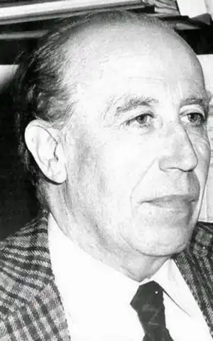

Франсиско Гарсія Павон
4 вересня 1919 року, Томельосо, Іспанія, — 1989, Мадрид
Іспанський письменник і літературний критик. Захистив докторську роботу по темі "Леопольдо Алас Кларін як письменник-оповідач". Проходячи початкову військову підготовку в Ов'єдо, написав свій перший роман "Поблизу Ов'єдо" (ісп. Cerca de Oviedo), який став фіналістом Премії Надаля в 1945 році. Викладав в Школі драматичного мистецтва Мадрида. Писав романи, есе, займався театральною і літературною критикою, але відомий в першу чергу своїми розповідями, в яких він був майстром поряд з іншим видатним іспанським оповідачем його часу — Ігнасіо Альдекоа (ісп. Ignacio Aldecoa). У травні 1965 року в іспанському журналі Ateneo з'явилася невелика детективна повість Франсіско Гарсія Павон (Francisco Garcнa Pavуn) "Автомобілі без людей" (Los carros vacios). Ця публікація породила два яскравих явища в іспанській літературі: Франсиско Гарсіа Павон — письменника-детективіста і створеного його фантазією Мануеля Гонсалеса на прізвисько Пліній. Перший — відомий іспанський прозаїк, доктор філології і філософії, викладач Вищої школи драматичного мистецтва, генеральний директор видавництва "Таурус", володар кількох престижних премій в галузі літератури. Другий — комісар бригади карного розшуку, начальник Муніципальної гвардії Томельосо. (Томельосо — невеликий іспанський містечко, де народився Гарсіа Павон і де здійснює свої трудові подвиги його герой Пліній.), Того ж 1965 року "Автомобілі без людей" вийшли книжковим виданням, а коли через три роки з'явилися відразу дві книги про Гонсалеса, "Історії Плінія "і" Царювання Вітіс ", критика захоплено оголосила Франсіско Гарсія Павон творцем справжнього іспанського детектива з яскравим національним колоритом. Франсиско Гарсія Павон помер на сімдесят четвертому році життя, в 1989 році. У Росії перше знайомство з Плинием відбулося в березні 1976 року на сторінках журналу "Иностранная литература", де був опублікований роман Гарсіа Павон "Руді сестри" (1970). За цей роман у себе на батьківщині автор отримав престижну премію "Надаль" (Nadal). Ще один детектив про Пліній, роман "Знову неділя" (1978), опублікований в щорічному збірнику "Зарубіжний детектив" (1984).